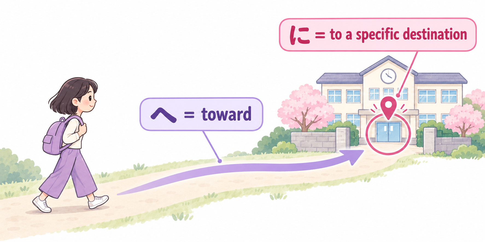

場所へ 行きます・来ます・帰ります
Say where you go, come, or return.
SAKURA JAPANESE · N5
Talk about where you go, how you travel, who goes with you, and when you make the trip.
Destinations, travel, companions, and dates
場所へ 行きます・来ます・帰ります
Say where you go, come, or return.
交通手段で
Say how you travel.
人と
Say who you travel with.
いつ・日付に
Ask when and give a date.
どこへも 行きません
Say that you are not going anywhere.
〜よ
Give information or draw attention to it.
Choose the movement verb from the speaker’s viewpoint
行きます = go to another place.
来ます = come toward the speaker’s location, or a viewpoint established in context.
帰ります = return / go home to a place you belong, such as home or your home country.
帰ります includes the idea of returning. It is not a substitute for every use of English “go back”: returning to a shop, for example, usually uses a different verb.
明日、京都へ 行きます。
I will go to Kyoto tomorrow.
来週、友達が 日本へ 来ます。
My friend will come to Japan next week. — the speaker is in Japan.
午後6時に 家へ 帰ります。
I will go home at 6 p.m.
来月、国へ 帰ります。
I will return to my home country next month.
Imagine you are outside Japan, talking to your Japanese teacher in Japan. English can say “I’m coming to Japan,” taking the listener’s viewpoint. In an ordinary Japanese sentence describing your trip, say 日本へ行きます.
✓ 来月、日本へ行きます。 — I am going to Japan next month.
Your teacher, who is in Japan, can describe your trip with 来ます: アンさんは来月、日本へ来ます。
The same trip has different wording because the speaker’s location changes. Do not choose 来ます simply because the English sentence uses “come.” Japanese can adopt another viewpoint in some contexts, but this basic speaker-based distinction is the useful starting point here.
行きます → 行く · 来ます → 来る · 帰ります → 帰る
The lesson uses polite ます forms. For a longer explanation of these verbs and purpose expressions such as “go to buy,” see the related grammar resource below. The purpose pattern itself is introduced later, in Lesson 13.
Destinations and negative answers
In 京都へ行きます, 京都 is the destination. The particle へ is pronounced e, not “he.” Use the same destination pattern with 来ます and 帰ります.
For these basic destination sentences, に is also possible: 京都に行きます. へ emphasizes the direction toward a place; に can mark the destination / arrival point. At this stage, recognize both and practise the Lesson 5 pattern with へ.
A：どこへ 行きますか。
B：学校へ 行きます。
A: Where are you going?
B: To school.
A：昨日、どこへ 行きましたか。
B：大阪へ 行きました。
A: Where did you go yesterday?
B: To Osaka.
A：明日、どこへ 行きますか。
B：どこへも 行きません。
A: Where will you go tomorrow?
B: I will not go anywhere.
どこへも行きません means “I do not / will not go anywhere.” For a past event, use どこへも行きませんでした. The negative verb is essential; も here does not simply mean “also.” You will also hear どこにも行きません.

学校へ 行きます。
へ = toward
Follow the arrow: movement in the direction of the school.
学校に 行きます。
に = to a specific destination
Look at the pin: the school is the destination of the movement.
Both sentences mean “I go / will go to school.” The arrow and the destination pin describe the same trip. Only the focus changes. に does not mean the person has already arrived, and へ does not mean the person will stop before reaching the school.
With 行きます・来ます・帰ります, both particles are natural in basic destination sentences. This does not make them interchangeable in every construction: time expressions and existence sentences, for example, use に, not へ.
Continue with Go · Come · Return — destinations and movement, or review に・で — time, location, and means.
Transport and going on foot
で marks the means of transport: 電車で = by train; バスで = by bus. It tells you how you travel, while へ tells you where you go.
電車で 東京へ 行きます。
I will go to Tokyo by train.
バスで 学校へ 行きます。
I go to school by bus.
A：何で 京都へ 行きますか。
B：新幹線で 行きます。
A: How will you get to Kyoto?
B: By Shinkansen.
歩いて 家へ 帰ります。
I will walk home.
Say 歩いて (on foot), not 歩いてで. 歩いて is a verb form; you do not need to learn the full て-form system yet to use this expression.
Other transport words: 地下鉄・飛行機・自転車・車・タクシー.
In a transport question, 何で can be read なんで or the clearer なにで. Here it asks “by what means?” Context distinguishes it from conversational なんで meaning “why?”
Companions and travelling alone
Use と after a person or group: 友達と = with a friend / friends; 家族と = with family. Ask だれと to find out who goes with someone.
Use 一人で to say “alone / by myself.” Do not add と after it.
友達と 京都へ 行きます。
I will go to Kyoto with a friend / friends.
家族と 国へ 帰ります。
I will return to my home country with my family.
A：だれと 行きますか。
B：一人で 行きます。
A: Who will you go with?
B: I will go alone.
来週、友達と 電車で 京都へ 行きます。
Next week, I will go to Kyoto by train with a friend / friends.
来週 (when) + 友達と (with whom) + 電車で (how) + 京都へ (where) + 行きます (movement).
These phrases can move around when the meaning stays clear, but each particle must stay attached to its own phrase. End the sentence with the verb. Leave out details that are already understood.
Specific dates and relative time words
Use いつ to ask generally when an event happens. Do not add に: いつ行きますか.
A specific date can take に: 7月20日に行きます. Relative words such as 明日・来週・来月・来年 normally do not take に. Compare the clock-time pattern in Lesson 4.
A：いつ 日本へ 行きますか。
B：来月 行きます。
A: When will you go to Japan?
B: Next month.
7月20日に 日本へ 行きます。
I will go to Japan on July 20.
A：いつ 日本へ 来ましたか。
B：先月 来ました。
A: When did you come to Japan?
B: Last month. — both speakers are now in Japan.
A：誕生日は いつですか。
B：4月8日です。
A: When is your birthday?
B: April 8. — this is a noun + です sentence, so no に is needed.
| Past | Current | Next |
|---|---|---|
| 昨日 yesterday |
今日 today |
明日 tomorrow |
| 先週 last week |
今週 this week |
来週 next week |
| 先月 last month |
今月 this month |
来月 next month |
| 去年 last year |
今年 this year |
来年 next year |
A complete reading reference
4月 = しがつ; 7月 = しちがつ; 9月 = くがつ. For dates, learn the whole expression: 1日 is ついたち, not いちにち. The reading いちにち refers to a duration of one day.
Ask 何月 for “which month?” and 何日 for “which date?” Read a full date in month–day order. Notice 14日・20日・24日 as well as dates 1–10.
| Month | Reading |
|---|---|
| 1月 | いちがつ |
| 2月 | にがつ |
| 3月 | さんがつ |
| 4月 | しがつ |
| 5月 | ごがつ |
| 6月 | ろくがつ |
| 7月 | しちがつ |
| 8月 | はちがつ |
| 9月 | くがつ |
| 10月 | じゅうがつ |
| 11月 | じゅういちがつ |
| 12月 | じゅうにがつ |
| Date | Reading |
|---|---|
| 1日 | ついたち |
| 2日 | ふつか |
| 3日 | みっか |
| 4日 | よっか |
| 5日 | いつか |
| 6日 | むいか |
| 7日 | なのか |
| 8日 | ようか |
| 9日 | ここのか |
| 10日 | とおか |
| 11日 | じゅういちにち |
| 12日 | じゅうににち |
| 13日 | じゅうさんにち |
| 14日 | じゅうよっか |
| 15日 | じゅうごにち |
| 16日 | じゅうろくにち |
| 17日 | じゅうしちにち |
| 18日 | じゅうはちにち |
| 19日 | じゅうくにち |
| 20日 | はつか |
| 21日 | にじゅういちにち |
| 22日 | にじゅうににち |
| 23日 | にじゅうさんにち |
| 24日 | にじゅうよっか |
| 25日 | にじゅうごにち |
| 26日 | にじゅうろくにち |
| 27日 | にじゅうしちにち |
| 28日 | にじゅうはちにち |
| 29日 | にじゅうくにち |
| 30日 | さんじゅうにち |
| 31日 | さんじゅういちにち |
Useful information with よ
よ can signal information you expect to be useful or new to the listener. It is not a question marker and does not need to be added to every statement. Tone and context matter: it can sound helpful, emphatic, or insistent.
この 電車は 京都へ 行きますよ。
This train goes to Kyoto. — giving the listener useful information.
行きます・来ます・帰ります — movement and the speaker’s viewpoint.
Particles — destination へ / に, transport で, and companion と.
Time expressions — dates and when to use に.
Read Go · Come · Return for movement verbs, destination particles, and purpose expressions. The purpose pattern is introduced in Lesson 13. Review に・で for time, location, and means.
Use it, don't just read it!
Other resources